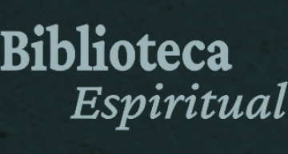

<header class="cabecalho ff-crimson-pro">
  <div class="logo">
    
    <p>Guarde trechos da Palavra, citações sagradas e reflexões preciosas: o baú das minhas passagens bíblicas
      favoritas.</p>
  </div>
  
</header>
